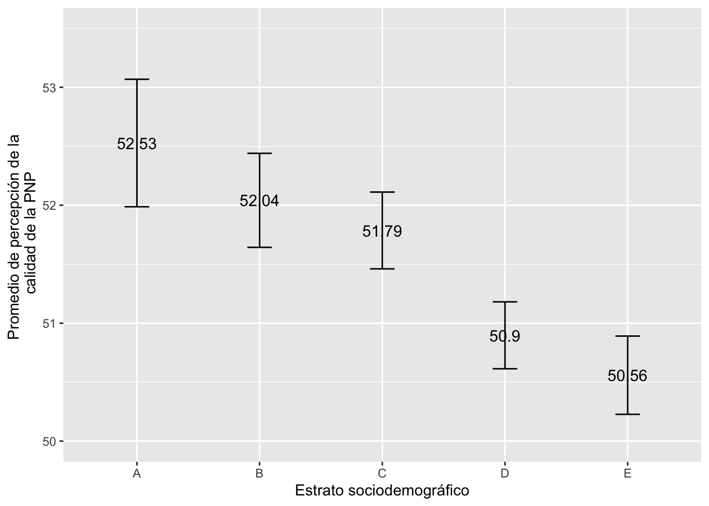
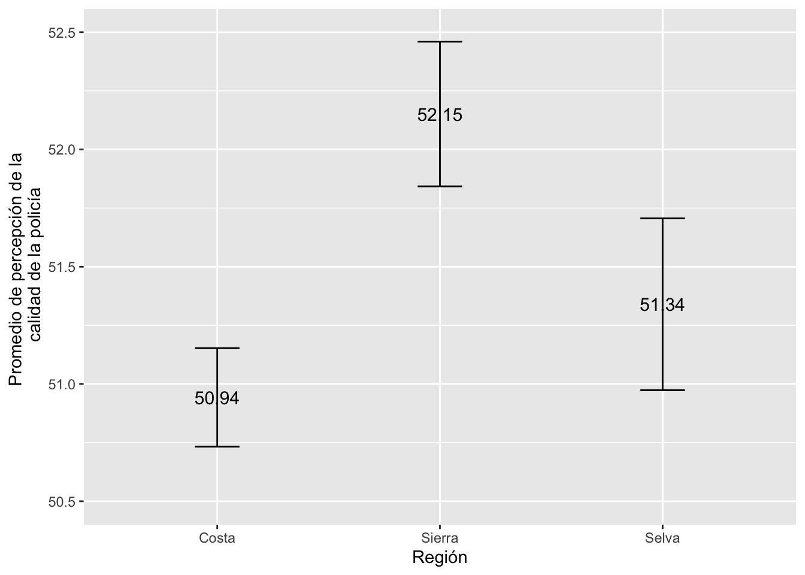
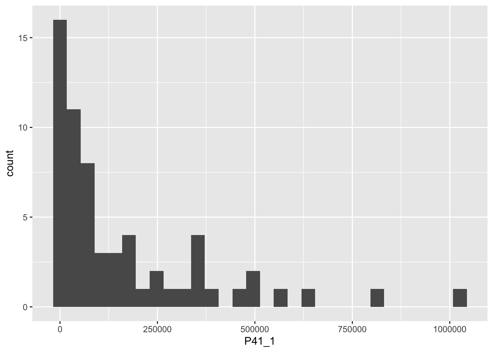
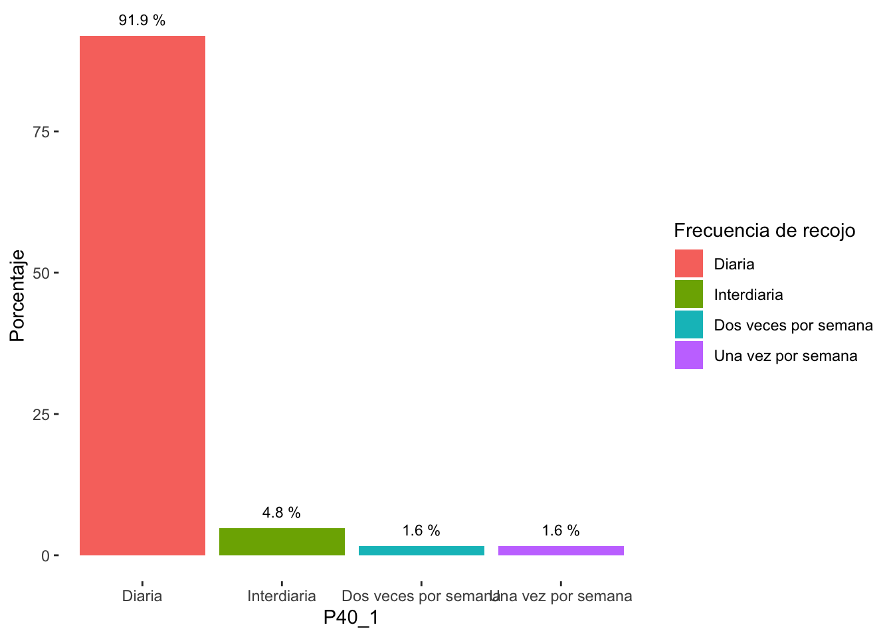
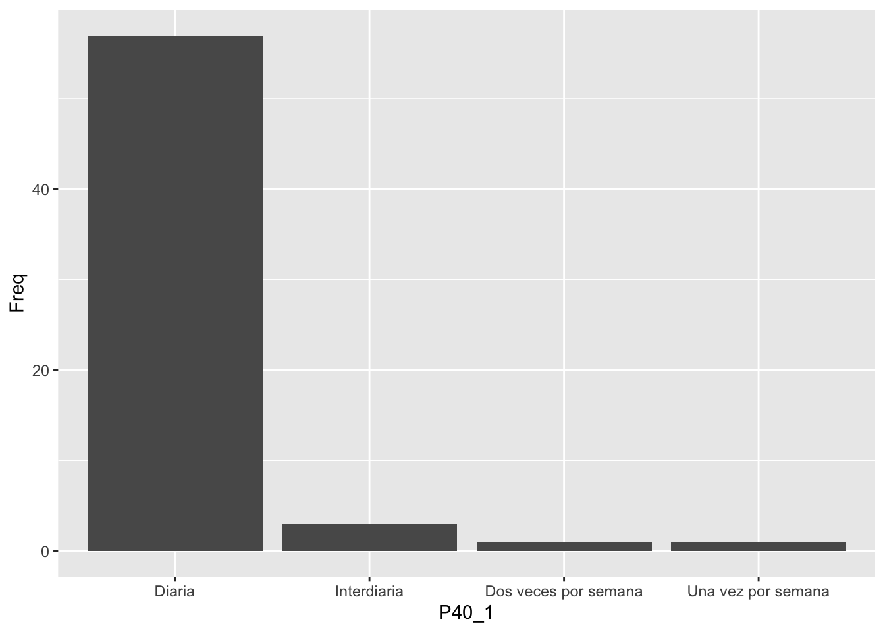
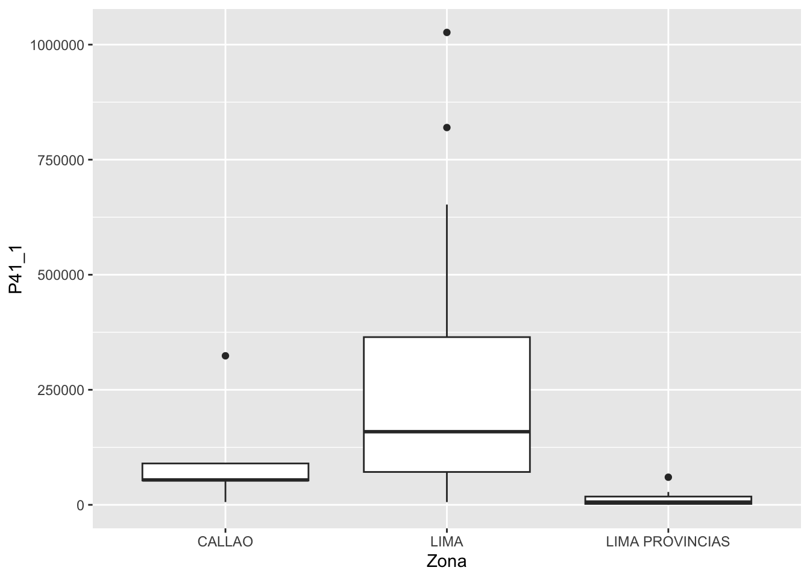

Práctica dirigida 5
FACULTAD DE CIENCIAS SOCIALES - PUCP
Curso: POL 278 - Estadística para el análisis político 1 | Semestre
2024 - 1

Inseguridad ciudadana
Dentro de la inestabilidad que se vive en el Perú actualmente una de las preocupaciones principales es la crisis de inseguridad ciudadana. A pesar de que se han realizado diversos intentos por mitigar la criminalidad, esta ha ido calando a todo nivel, desde robos a mano armada, extorsiones, entre otros.
En tanto, es relevante analizar las percepciones ciudadanas sobre la Policia Nacional del Perú (PNP) y de esa forma focalizar políticas que respondan a las preocupaciones de las personas de acuerdo al estrato y a nivel regional. Para ello se responderá la siguiente pregunta de investigación:
¿Existe diferencia de percepciones sobre la calidad del servicio de la PNP en las distintas categorías de estratos sociodemográficos y regiones en el 2023? 🤔
Para poder responder a la pregunta se realizó una búsqueda de base de datos que recolecten información sobre delincuencia. Se optó por la Encuesta Nacional de Programas Presupuestales - ENAPRES 1.
ENAPRES se viene ejecutando desde el año 2010 en el área urbana y rural de los 24 Departamentos y la Provincia Constitucional del Callao, como parte de las investigaciones que realiza el Instituto Nacional de Estadística e Informática (INEI) en coordinación con el Ministerio de Economía y Finanzas (MEF) y los diferentes Ministerios y organismos del sector público.
La Encuesta tiene como propósito fundamental generar información estadística actualizada para la construcción de indicadores que facilite el seguimiento y evaluación de los diferentes Programas Presupuestales desarrollados por el Ministerio de Economía y Finanzas en el sector público en el marco del Presupuesto por Resultados; y de esta manera, contribuir al diseño y orientación de políticas públicas para el mejoramiento de las condiciones de vida de la población
Llamemos a los paquetes
library(rio)
library(lsr)
library(dplyr)
library(ggplot2)Importemos la base de datos
data=import("ENAPRES_2023.xlsx")| Nombre de variable | Etiqueta |
|---|---|
| vigilancia | ¿Cómo califica usted la vigilancia de la Policía Nacional del Perú? 1:Muy mala, 2:Mala, 3:Buena, 4:Muy buena |
| confianza_pnp | En cuanto a la seguridad ciudadana; ¿qué tanta confianza le inspira la Policía Nacional del Perú? 1:Nada, 2:Poca, 3:Suficiente, 4:Bastante |
| comisaria | En los últimos 12 meses, ¿cómo califica usted el trabajo que ha realizado la comisaría de su zona o barrio? |
| atencion | ¿Cómo califica usted el desempeño de la Policía Nacional del Perú en relación a: atender prontamente cuando ocurre un delito? 1:Muy malo, 2:Malo, 3:Bueno, 4:Muy bueno |
| seguridad | ¿Cómo califica usted el desempeño de la Policía Nacional del Perú en relación a: mantener la seguridad y tranquilidad pública? 1:Muy malo, 2:Malo, 3:Bueno, 4:Muy bueno |
| info | ¿Cómo califica usted el desempeño de la Policía Nacional del Perú en relación a: informar a la comunidad sobre la prevención del delito? 1:Muy malo, 2:Malo, 3:Bueno, 4:Muy bueno |
| trato_igual | ¿Cómo califica usted el desempeño de la Policía Nacional del Perú en relación a: tratar a las personas sin distinción alguna? 1:Muy malo, 2:Malo, 3:Bueno, 4:Muy bueno |
| ESTRATO | Estrato sociodemográfico 1:A, 2:B, 3:C, 4:D, 5:E |
| REGIONNATU | Región Natural 1:Costa, 2: Sierra, 3: Selva |
summary(data)## REGIONNATU ESTRATO confianza_pnp atencion
## Length:14990 Min. :1.000 Min. :1.000 Min. :1.000
## Class :character 1st Qu.:3.000 1st Qu.:2.000 1st Qu.:2.000
## Mode :character Median :4.000 Median :2.000 Median :3.000
## Mean :3.425 Mean :2.355 Mean :2.569
## 3rd Qu.:4.000 3rd Qu.:3.000 3rd Qu.:3.000
## Max. :5.000 Max. :4.000 Max. :4.000
## seguridad info trato_igual comisaria
## Min. :1.000 Min. :1.000 Min. :1.000 Min. :1.000
## 1st Qu.:2.000 1st Qu.:2.000 1st Qu.:2.000 1st Qu.:2.000
## Median :2.000 Median :3.000 Median :2.000 Median :3.000
## Mean :2.498 Mean :2.566 Mean :2.534 Mean :2.581
## 3rd Qu.:3.000 3rd Qu.:3.000 3rd Qu.:3.000 3rd Qu.:3.000
## Max. :4.000 Max. :4.000 Max. :4.000 Max. :4.000
## vigilancia
## Min. :1.000
## 1st Qu.:2.000
## Median :3.000
## Mean :2.599
## 3rd Qu.:3.000
## Max. :4.000Revisemos la bd
str(data)
names(data)1. ¿Cómo defino calidad del servicio de la PNP?
Indicador proxy
Un indicador proxy es una variable que se utiliza para inferir el valor de otra variable que es difícil de medir o observar directamente. En otras palabras, un indicador proxy actúa como un sustituto o un representante indirecto de la variable de interés.
Creamos un indicador aditivo a partir de las siguientes variables:
| Nombre de variable | Etiqueta |
|---|---|
| vigilancia | ¿Cómo califica usted la vigilancia de la Policía Nacional del Perú? 1:Muy mala, 2:Mala, 3:Buena, 4:Muy buena |
| confianza_pnp | En cuanto a la seguridad ciudadana; ¿qué tanta confianza le inspira la Policía Nacional del Perú? 1:Nada, 2:Poca, 3:Suficiente, 4:Bastante |
| comisaria | En los últimos 12 meses, ¿cómo califica usted el trabajo que ha realizado la comisaría de su zona o barrio? |
| atencion | ¿Cómo califica usted el desempeño de la Policía Nacional del Perú en relación a: atender prontamente cuando ocurre un delito? 1:Muy malo, 2:Malo, 3:Bueno, 4:Muy bueno |
| seguridad | ¿Cómo califica usted el desempeño de la Policía Nacional del Perú en relación a: mantener la seguridad y tranquilidad pública? 1:Muy malo, 2:Malo, 3:Bueno, 4:Muy bueno |
| info | ¿Cómo califica usted el desempeño de la Policía Nacional del Perú en relación a: informar a la comunidad sobre la prevención del delito? 1:Muy malo, 2:Malo, 3:Bueno, 4:Muy bueno |
| trato_igual | ¿Cómo califica usted el desempeño de la Policía Nacional del Perú en relación a: tratar a las personas sin distinción alguna? 1:Muy malo, 2:Malo, 3:Bueno, 4:Muy bueno |
Recordemos los pasos para construir un indicador:
- Verificar que las variables correspondan al concepto.
- Revisar el sentido de las categorías en el cuestionario/diccionario
- Si las categorías están en el correcto sentido, proceder a sumarlas; si no lo están, proceder a recodificarlas para luego sumar. Recuerda que para sumarlas deben ser variables tipo numéricas.
- Realizar suma de las variables a analizar
- Aplicar la función
rescalecon el rango específico
Ya habíamos revisado previamente que las variables si están como numéricas.
library(tidyverse)
data=data%>%
mutate(suma=(confianza_pnp+comisaria+atencion+seguridad+info+trato_igual+vigilancia))summary(data$suma)## Min. 1st Qu. Median Mean 3rd Qu. Max.
## 10.0 17.0 18.0 17.7 19.0 25.0Creamos el indicador
library(scales)
data=data%>%
mutate(indicador = rescale(suma, to = c(0, 100)))summary(data$indicador)## Min. 1st Qu. Median Mean 3rd Qu. Max.
## 0.00 46.67 53.33 51.35 60.00 100.002. ¿Cuál es la media de la calidad del servicio de la PNP a una certeza del 95%?
ic_media = ciMean(data$indicador,na.rm = TRUE)
ic_media## 2.5% 97.5%
## [1,] 51.19168 51.50612Nuestra media poblacional se encuentra entre 51.19 y 51.50. Esto quiere decir que tenemos una certeza del 95% de que el valor poblacional de la percepción de la calidad del labor de la PNP se encuentra entre 51.19 y 51.50. Lo que se encuentra muy cercano al punto medio del indicador.
3.¿Existe diferencia de medias en cuanto a la percepción de la calidad de la PNP entre estratos sociodemográficos?
data = data %>%
mutate(ESTRATO = factor(ESTRATO, levels = 1:5, labels = c("A","B","C","D","E"), ordered = TRUE))icmedia_estrato = data%>%
group_by(ESTRATO)%>%
summarise(Media = mean(indicador, na.rm=T),
min = ciMean(indicador, na.rm=T)[1],
max = ciMean(indicador, na.rm=T)[2])
icmedia_estrato## # A tibble: 5 × 4
## ESTRATO Media min max
## <ord> <dbl> <dbl> <dbl>
## 1 A 52.5 52.0 53.1
## 2 B 52.0 51.6 52.4
## 3 C 51.8 51.5 52.1
## 4 D 50.9 50.6 51.2
## 5 E 50.6 50.2 50.9library(ggplot2)
ggplot(icmedia_estrato, aes(x = ESTRATO, y=Media)) +
geom_errorbar(aes(ymin=min, ymax=max), width = 0.2)+
geom_text(aes(label=paste(round(Media, 2))), size=4)+
xlab("Estrato sociodemográfico") + ylab("Promedio de percepción de la \n calidad de la PNP")+
ylim(50, 53.5) 
4.¿Existe diferencia de medias en cuanto a la percepción de la calidad de la PNP entre regiones naturales?
data = data %>%
mutate(REGIONNATU = factor(REGIONNATU, levels = 1:3, labels = c("Costa","Sierra","Selva"), ordered = TRUE))icmedia_region = data%>%
group_by(REGIONNATU)%>%
summarise(Media = mean(indicador, na.rm=T),
min = ciMean(indicador, na.rm=T)[1],
max = ciMean(indicador, na.rm=T)[2])
icmedia_region## # A tibble: 3 × 4
## REGIONNATU Media min max
## <ord> <dbl> <dbl> <dbl>
## 1 Costa 50.9 50.7 51.2
## 2 Sierra 52.2 51.8 52.5
## 3 Selva 51.3 51.0 51.7ggplot(icmedia_region, aes(x = REGIONNATU, y=Media)) +
geom_errorbar(aes(ymin=min, ymax=max), width = 0.2)+
geom_text(aes(label=paste(round(Media, 2))), size=4)+
xlab("Región") + ylab("Promedio de percepción de la \n calidad de la policía")+
ylim(50.5, 52.5) 
Solucionario PC1
library(dplyr)
library(ggplot2)
library(rio)
data <- import("Renamu-PC1.xlsx")Pregunta 1
1.1 Calcula cuál es la frecuencia de recojo de residuos sólidos (P40_1) más común entre los distritos de Lima y Callao, interpreta los resultados y responde a la pregunta ¿todos los distritos recogen la basura diariamente?
paragrafico <- data %>%
mutate(P40_1=factor(P40_1, levels = c(1:4), labels = c("Diaria","Interdiaria","Dos veces por semana","Una vez por semana"))) %>%
group_by(P40_1) %>%
summarise(Freq=n())
paragrafico## # A tibble: 4 × 2
## P40_1 Freq
## <fct> <int>
## 1 Diaria 57
## 2 Interdiaria 3
## 3 Dos veces por semana 1
## 4 Una vez por semana 11.2 Usa el gráfico pertinente para visualizar la frecuencia de recojo de residuos sólidos (P40_1)
ggplot(paragrafico, aes(x=P40_1,y=Freq))+
geom_bar(stat="identity")
Extra: Gráfico de barras en %
para_graficoP <- data %>%
mutate(P40_1=factor(P40_1, levels = c(1:4), labels = c("Diaria","Interdiaria","Dos veces por semana","Una vez por semana"))) %>%
group_by(P40_1) %>%
summarise(Freq=n()) %>%
mutate(Porcentaje = (Freq / sum(Freq))*100)
para_graficoP## # A tibble: 4 × 3
## P40_1 Freq Porcentaje
## <fct> <int> <dbl>
## 1 Diaria 57 91.9
## 2 Interdiaria 3 4.84
## 3 Dos veces por semana 1 1.61
## 4 Una vez por semana 1 1.61ggplot(para_graficoP, aes(x=P40_1,y=Porcentaje,fill=P40_1))+
geom_bar(stat="identity")+
geom_text(aes(label=paste(round(Porcentaje, 1), "%")), vjust=-1, color="black", size=3)+
labs(fill = "Frecuencia de recojo") +
theme(panel.background=element_rect(fill = "white", colour = "white"))
Pregunta 2
2.1 Calcula los estadísticos descriptivos para la variable que “Cantidad promedio diaria de residuos sólidos (basura) en kilogramos” (P41_1). Interprete los resultados
data %>%
summarise(media = mean(P41_1),
mediana = median(P41_1),
sd = sd(P41_1),
var = var(P41_1),
max=max(P41_1),
min=min(P41_1),
Q1=quantile(P41_1)[2],
Q2=quantile(P41_1)[3],
Q3=quantile(P41_1)[4])## media mediana sd var max min Q1 Q2 Q3
## 1 161789.4 73570 215107.5 46271245988 1026525 200 12375 73570 239295.22.2 Use el gráfico pertinente para visualizar a la variable P41_1, interprete y responda a la pregunta ¿cuál sería la mejor medida de tendencia central para representar a la variable?
ggplot(data,aes(x = P41_1))+
geom_histogram()
2.3 Genere un gráfico que muestre los cuartiles de la variable “P41_1” según Zona (Lima, Callao o Lima Provincias). ¿Existen diferencias entre las zonas? Interprete los resultados
ggplot(data, aes(x=Zona, y=P41_1))+
geom_boxplot()
Mayor información en: http://proyecto.inei.gob.pe/enapres/↩︎